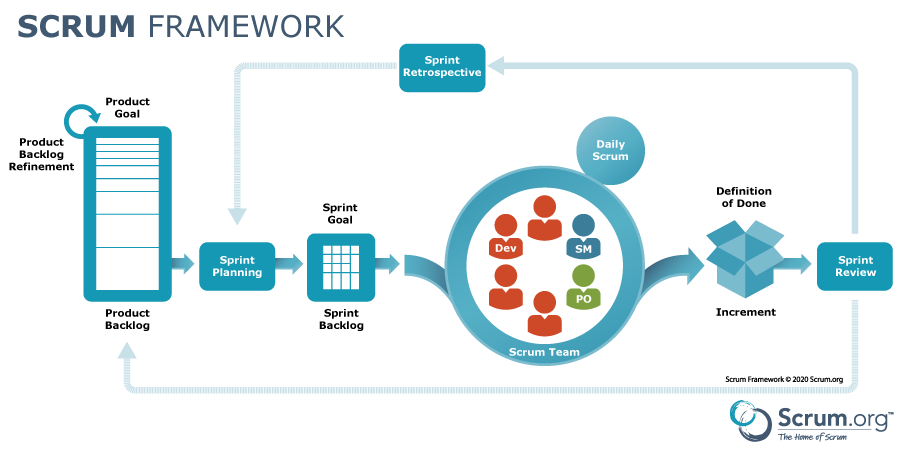

Methodik & Zertifizierungen
Als Certified Scrum Product Owner (CSPO) und erfahrener Berater begleite ich Teams und Organisationen bei der Einführung und Skalierung agiler Arbeitsweisen. Mein Fokus liegt auf der Balance zwischen agiler Flexibilität und unternehmerischer Stabilität.

Frameworks & Skalierung
Scrum Kanban SAFe (Scaled Agile Framework) Hybride ProjektmethodikRollen & Coaching
Product Owner (CSPO) Agile Coach Stakeholder Management Change ManagementTool-Expertise
Jira Software Confluence Miro / Mural TrelloSchwerpunkte der Zusammenarbeit
- Einführung agiler Rollen und Zeremonien in klassischen Unternehmensstrukturen.
- Optimierung des Product Backlogs und Priorisierung nach Business Value.
- Moderation von PI-Plannings (SAFe) und Sprint-Reviews zur Steigerung der Transparenz.
- Anforderungsmanagement und Prozessdokumentation in Jira und Confluence.
- Coaching von Teams zur Selbstorganisation und kontinuierlichen Verbesserung.